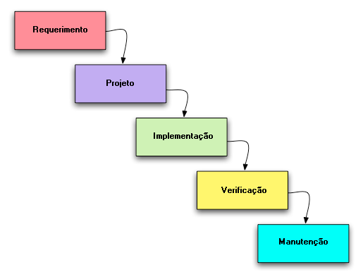

História do Método Ágil
Agile é uma metodologia popular e bem conhecida, que permite que as equipes de projeto promovam um ambiente de desenvolvimento contínuo e tragam produtos ao mercado com mais rapidez.
O ambiente iterativo, flexível e colaborativo acomoda a evolução das necessidades em constante mudança, o que torna o Agile uma metodologia adequada para uso em diversos setores.
A metodologia tradicional
Tudo começou com a necessidade de desenvolver processos, ou melhor, métodos que tornassem o desenvolvimento um processos eficiente e confiável.
A metodologia tradicional de Gerenciamento de Projetos, neste inicio se chama Cascata, é uma metodologia estruturada e trabalhada em etapas. Embora ela tenha suas vantagens, a prioridade de levar um produto completo ao mercado, sem alterações ou acréscimos durante o processo, significa que pode levar vários anos até que o projeto seja concluído.
Nesse ínterim, o novo produto inovador pode não se encaixar mais no mercado ou ter sido substituído por um concorrente rival, especialmente em setores de rápida evolução, como a tecnologia.
O modelo cascata também cultivava o que se chama de “Cemitério do Desenvolvimento”, onde os projetos ficavam pela metade, pois não eram mais necessários ou não atendiam às necessidades do mercado.
As mudanças
Foram as equipes de desenvolvimento de software que conduziram a mudança do Método Cascata durante a década de 1990 para um modelo mais leve, que deu mais flexibilidade e exigiu menos planejamento inicial. Métodos como Scrum, DSDM, Application Development e Extreme Programming começaram a ganhar destaque e agora são reconhecidos como os primeiros métodos Agile.
No início de 2000, dezessete desenvolvedores de software se reuniram para discutir como poderiam acelerar o tempo de desenvolvimento e lançar produtos no mercado mais rapidamente. Eles identificaram que, para fazer isso, precisariam reduzir o atraso dos benefícios para o usuário e obter feedback oportuno dos usuários para que melhorias contínuas pudessem ser feitas.
O manifesto Ágil
Quer aprender mais?
Algumas mentiras sobre o Método Ágil
- Agilidade só funciona em times de tecnologia
- Agilidade é uma forma de pensar, e não uma forma de pensar em tecnologia. Aplicar o modelo mental ágil em qualquer segmento é o desafio, o agir é consequência.
As pessoas criam essa dependência pois agilidade nasceu na área de TI, porém hoje todas as empresas, as áreas e departamentos podem e devem se beneficiar desse modelo. - Ágil significa entregar mais rápido
- Agilidade não tem relação com Velocidade. Rapidez é para o Flash. Agilidade significa fazer constantemente pequenas entregas de valor. Ou seja, em ciclos curtos, o cliente sempre receberá uma pequena parte do seu produto e poderá usufruir dela. Por isso, as pessoas tem a sensação de que é mais rápido. Mas o tempo de projeto pode ser o mesmo do que uma forma tradicional. Porém de forma ágil, temos certeza que sempre entregaremos valor ao nosso cliente.
- Agilidade significa não entregar documentação
- Nos tempos atuais, os produtos possuem uma usabilidade tão simples que praticamente não se faz mais necessários “manual do usuario”. Nesse item, é importante entender qual o volume ideal de documentação para se projeto. Uma vez que esteja definido. se torna uma artefato de valor e faz parte do pacote de desenvolvimento.
Algumas verdades sobre o Método Ágil
- Foco na solução de impedimentos
- O modelo scrum possui como característica principal ciclos curtos com entregas frequentes de valor. Ao final de cada ciclo, fazemos uma inspeção no que foi entregue. Isso nos garante assertividade nas entregas. Temos também como integrante do time um líder facilitador, que possui como uma de suas atribuições remover qualquer coisa que impeça o time de alcançar o objetivo da Sprint. Com isso, concluímos que nosso objetivo é sempre entregar valor ao nosso cliente e para isso precisamos ser focados em solucionar impedimentos.
- Design Thinking e Agilidade formam uma aliança poderosa.
- O Design thinking nasce de um problema. São feitas diversas fases até se encontrar uma melhor ideia validada com o cliente. O Ágil entra na sequência com a implementação dessa ideia em ciclos curtos com validações constantes. Com a junção desse modelo, o cliente que anteriormente tinha um problema, recebe uma solução implementada e testada conforme a sua necessidade;. A combinação desses dois métodos de trabalho é um case de sucesso.
- As grandes estrelas de um time ágil são as pessoas
- Um time ágil é diretamente relacionado a uma gestão 3.0. Dentro dessa gestão falamos de energizar pessoas , empoderar os times, alinhar restrições, crescer a estrutura e buscar melhorar todas as pessoas. São as pessoas que executam as atividades, são elas que garantem o sucesso de suas entregas e consequentemente de um projeto. Em agilidade falamos que pessoas são mais importantes que qualquer processo.
Então é isso! Esper que você tenha gostado do nosso artigo com essas curiosidades sobre o Método Ágil e sua incrível estrutura de projetos